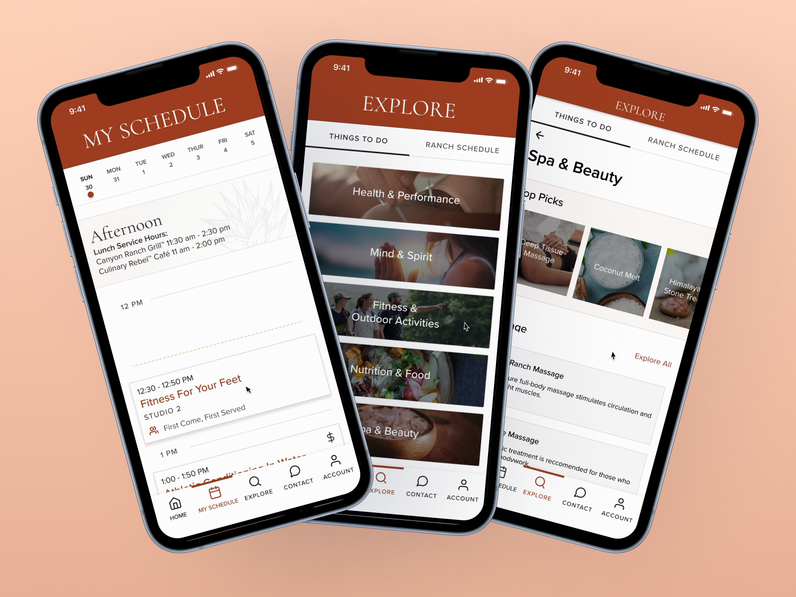
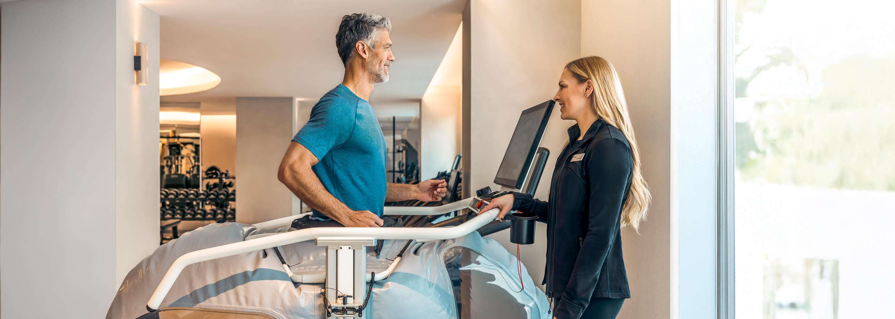
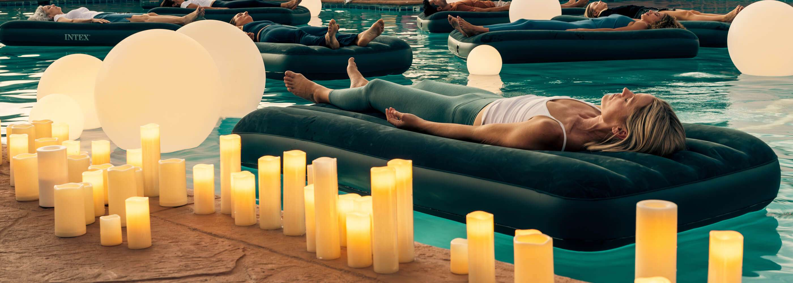
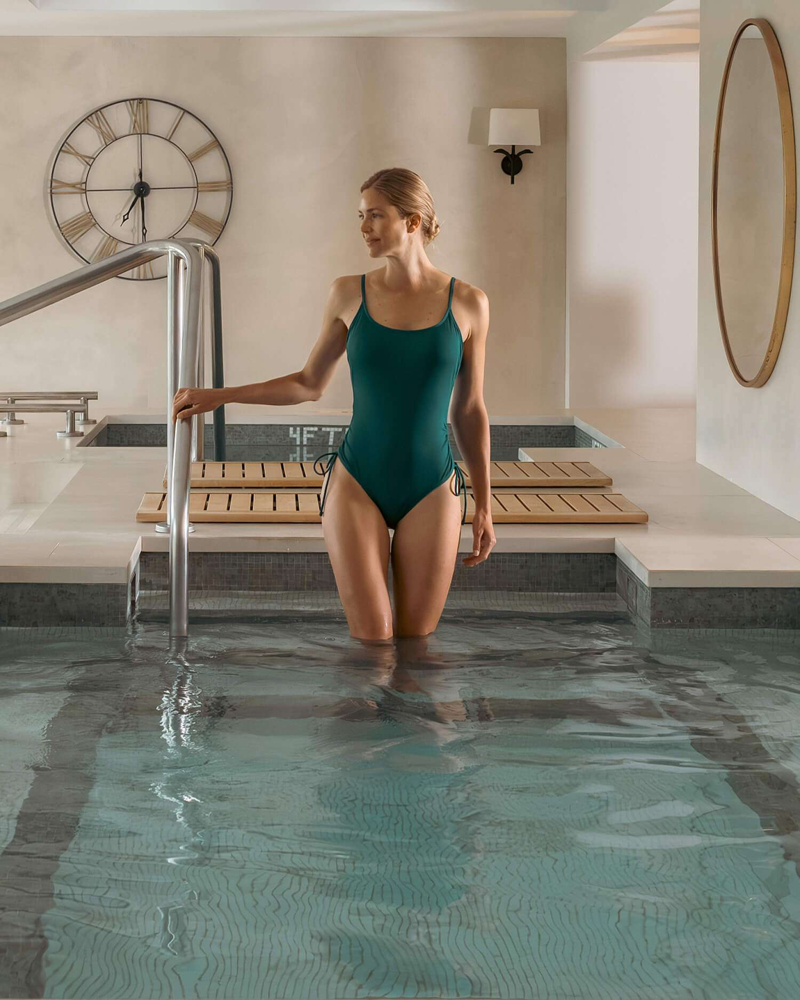
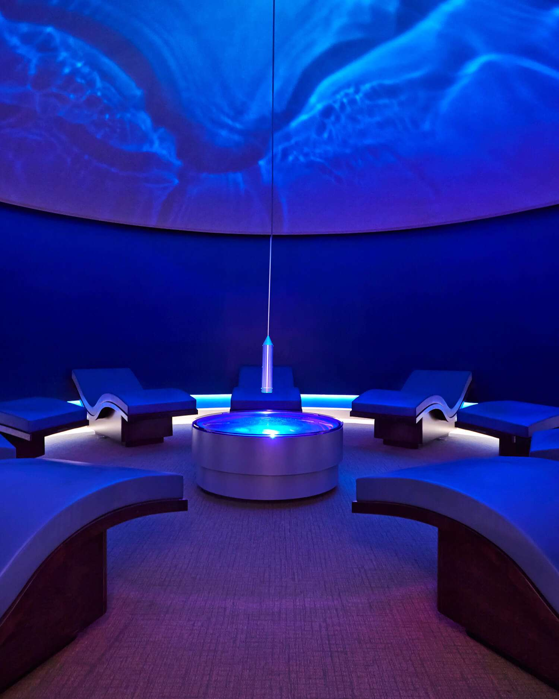
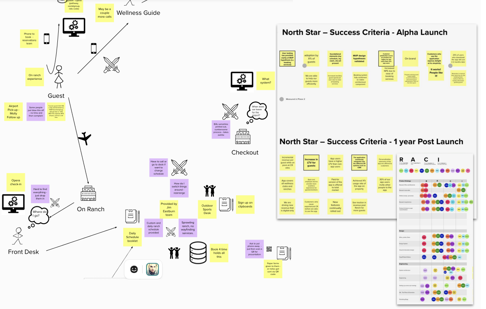
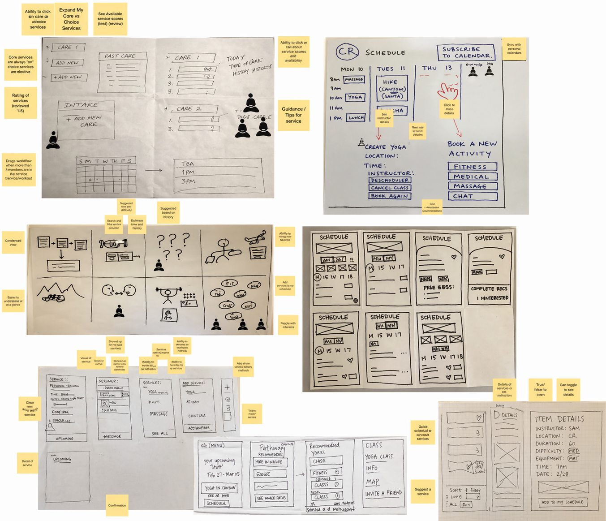
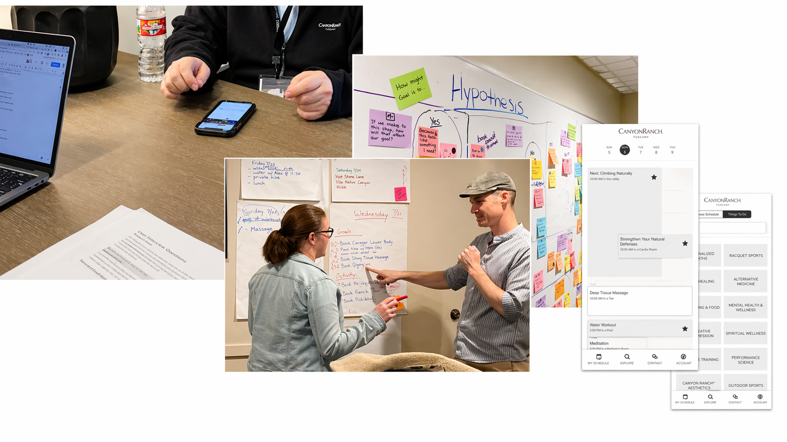
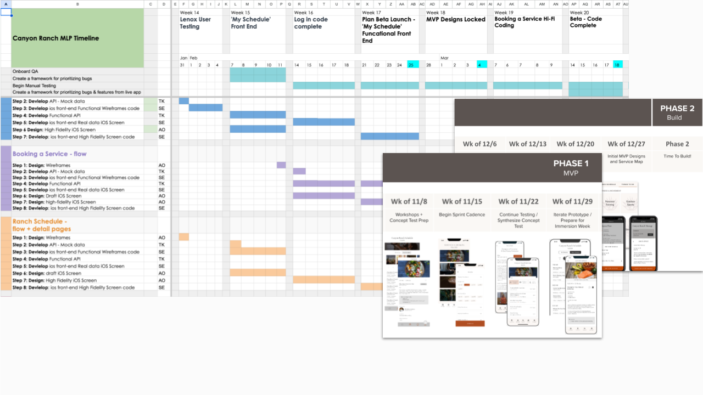

Performance
Mindfulness

Canyon Ranch was losing bookings at the desk. Guests paying $3,000 a night still had to call to book a massage, personal training session, or consultation. Wellness guides were spending 20+ hours a week on scheduling calls instead of high-touch advising. Competitors had already normalized self-service booking. Canyon Ranch was still routing simple intent through staff.
One guest, a CEO, tried to book a personal trainer. The line at the desk was too long. She left. That was $300 gone in about 90 seconds, and it was happening constantly across both properties. Estimated lost ancillary revenue was $1.2M a year.
The brief was to build a native iOS app from nothing. The real work was deciding what the app should and should not do, then getting eight senior stakeholders aligned across marketing, IT, consumer insights, sales, spa, health and performance, digital experience, and transformational experience. The app went from zero to alpha in eighteen months.
One more constraint shaped every decision. The platform had to be built to zero incremental budget, justified entirely against the revenue it was expected to recover and the staff hours it would free up. Every feature had to earn its place before it made the roadmap.
Three cross functional sessions over two weeks. Marketing, IT, sales, spa, all in one room. Getting eight business line leads to sign a roadmap required making the tradeoffs visible early. We left with a journey map, hypothesis backlog, and a roadmap they signed off on.
The journey map covered the full guest and wellness guide experience, airport to checkout. We defined "done" for alpha as our success criteria. Every sprint decision had to tie back to that.

Journey mapping, hypothesis backlog, MVP scoping. About 5 usability sessions per week in Tucson.
Tucson flagship. Qualitative usability testing, 5 sessions per week. Findings fed directly into sprint backlog.
TestFlight rollout. 5 to 10 users per week, quantitative and qualitative. Recommendations at each sprint review.
78% guest adoption in the first three weeks at the Tucson flagship.
A single "my schedule" view gave guests one place for booked and complimentary services. Service booking let them skip the front desk line, which mattered because the queue was suppressing bookings. Wellness guides stayed in the flow for complex decisions, but came out of routine scheduling once testing showed their presence created hesitation without adding value.

Testing was on property in Tucson, with real guests, real devices. Five to eight moderated sessions per week. After each one, the team debriefed and updated the backlog before the next morning. The gap between "we heard this" and "we changed this" was usually one sprint.

Sprint planning, grooming, and research synthesis ran weekly across US and India. Findings from research became user stories in the same sprint. Nothing piled up waiting on a product decision.

The build moved through a distributed team, fixed dependencies, and senior stakeholders with different incentives. Three calls mattered because each one protected momentum, adoption, or revenue.
APIs were still being configured, design was still iterating, and the India development team needed usable sprint work. The risk was a delivery stall caused by dependencies that could not be resolved in sequence.
Build against mock data APIs and greyscale wireframes, then swap in real data and hi-fi design once both stabilized. I took the sequencing plan to the Product Owner and CIO so the dependency tradeoff was explicit before the team moved.
All three workstreams kept moving and no milestone slipped. The approach became the onboarding pattern for new distributed team members through the rest of the engagement.
Three interdependent teams with no sequencing plan would have stalled for weeks. Building against mock data and greyscale wireframes kept all three streams productive while the real dependencies were being resolved.
Guests hesitated when booking because the MVP did not surface conflicts between free and paid activities. That hesitation showed up before launch, which made it cheaper to solve than to explain later.
Add lightweight conflict detection before beta, scoped to one sprint. I paired the usability evidence with booking-completion risk so the Product Owner could judge the tradeoff clearly.
Post-launch feedback rated conflict alerts as the most valued feature in the app. One sprint of added scope removed a blocker at the exact point where guests were deciding whether to complete a booking.
Booking hesitation from missing conflict alerts was visible in every usability session. One sprint of added scope prevented a post-launch fix that would have been significantly more expensive to diagnose and address.
Seven of eight guests in early usability sessions could not find a massage under Canyon Ranch's service categories. The taxonomy reflected the business, not how guests searched.
Run a 16-participant card sort before finalizing IA. I presented the timeline impact against the adoption risk so leadership could choose the delay with eyes open.
The revised taxonomy achieved 8 of 8 task completion in follow-up testing. The IA from that study became the navigation architecture at launch.
A broken taxonomy would have made the core booking flow feel unreliable on day one. The extra sprint was less expensive than fixing IA under live traffic.
P10, returning guest, Canyon Ranch Tucson. Concept validation phase. Describing the paper activity booklet and how she manages her schedule on property.
P11, returning guest, Canyon Ranch Tucson. Post-launch usability session. Reacting to the app after using it on property for the first time.
Two weeks in, the pattern was clear. Guests arrived with decisions already made, but acting on those decisions required calling someone or finding the front desk. Every scoping decision came back to that observation: remove the steps between intent and action.
Discover features, video descriptions, and wish lists went to the backlog. Self-service booking, conflict alerts, and schedule view shipped first.
Stakeholder interviews surfaced something the original brief had underweighted. Wellness guides held the on-property experience together, but more than 20 hours a week were going to scheduling calls instead of wellness advising.
Reducing call volume was not just operational efficiency. It was how the app gave staff time back for the high-touch work guests valued most, producing roughly 9 recovered hours per guide each week after launch.
Guests looked for a massage under Medical Spa, Signature Services, Health and Performance, almost everywhere except where it actually lived. The categories made sense to the business and almost no sense to first-time guests.
We ran a card sort with 16 participants and rebuilt the categories around guest search behavior. Follow-up testing moved the task from 7 of 8 failing to 8 of 8 succeeding.
We pushed for this work even though it added time. The final ease-of-use rating was 2.23 on a 5-point scale where 1 is the best score, close to the top end.
Concept validation showed that loyal guests were willing to download immediately, while less familiar guests treated download as a commitment. That made trust a product requirement, not a brand preference.
We prioritized brand consistency over feature density. The app needed to feel like Canyon Ranch before it asked guests to change behavior. Features could wait. Trust signals could not.
Guests who could browse and book directly spent more per stay. The app did not create intent from nothing; it captured intent that the old process was letting leak away.